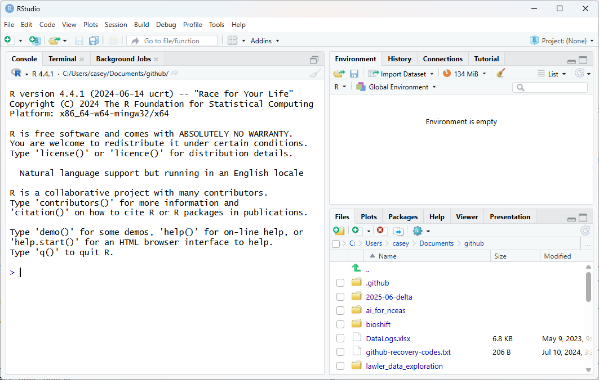
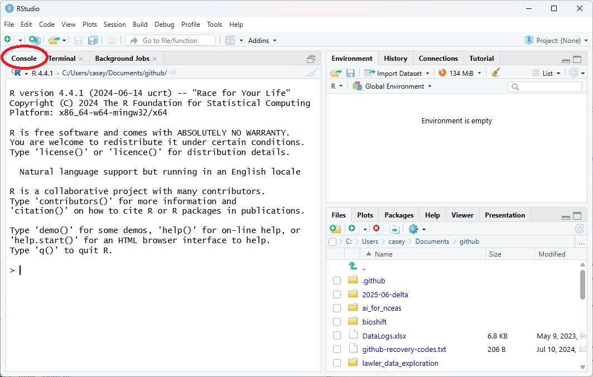

Notice the default panes:
- Console (entire left)
- Environment/History (tabbed in upper right)
- Files/Plots/Packages/Help (tabbed in lower right)
NOTE: New tabs may show up in different contexts (e.g., Git tab)
Welcome to R & RStudio
An introduction to programming in R
NCEAS Learning Hub

Let’s take a tour of the RStudio interface!
Notice the default panes:
NOTE: New tabs may show up in different contexts (e.g., Git tab)
Quick Tip: You can change the default location of the panes, among many other things. More information here.

The Console pane is where you can directly type R code, and R will interpret the code and return some value.
When you first start, you’ll see some text including the version of R software currently installed (yours may not match the image!)
Note there are tabs for Terminal and Background Jobs. Terminal is direct access to your computer’s operating system (NOT R software). We won’t do anything with those for now.

The Environment pane is where R will display information it is holding in memory - “objects” that may contain individual values, lists or vectors containing multiple values, data frames containing tabular data, etc.
When you first start up, if you have set things up as we prefer to set them, the Environment pane will say “Environment is empty.” Later, as we use R to make some simple calculations, you will see objects in this pane.
Note there is a tab for History and perhaps others. History will show you the sequence of any commands you have typed or executed into R. When we start writing R scripts, you will see that the History tab is not something we need for reproducible science.

The Files pane displays files and folders where you might store R scripts, datasets, images, etc.
You can navigate around these files just like you would normally browse on your computer, and open scripts, inspect data, etc.
Note the other tabs: when you create plots, this pane will switch to that tab and show you the plots. You can see what packages (and versions) you have installed, get help on functions and packages, and view HTML or other outputs on these tabs.
We can run code in the Console window - direct access to the R application. Let’s start there, but later we’ll generally not do much in the console, but instead in scripts.
At its most basic, we can use R as a calculator. Let’s try a couple of examples in the console.
3 * 4[1] 123 + 4[1] 73 - 4[1] -13 / 4[1] 0.75Notice when you hit “enter” after the calculation, R immediately evaluates the calculation for you and tells you the result.
We can assign the value of some calculation to an “object” by giving it a name. For example, we can store the result of the calculation 3 * 4 and call it “result”. Then we can call the name of the object to retrieve the value.
result <- 3 * 4 ### assign the value
result ### retrieve the value[1] 12Technically, we are creating an object called “result” and assigning the value to that object. Then we can call the name of the object to use the value in other calculations, and so on.
Here’s a slightly more complicated example to calculate the volume of a cylinder.
r <- 5 ### radius of cylinder is 5 units
area <- pi * r^2 ### calculate the area, using r
area ### report the area[1] 78.53982h <- 7 ### height of cylinder is 7 units
vol <- area * h ### volume is area X height
vol ### report the volume[1] 549.7787

Check the Environment pane again - it no longer says “Environment is empty” but instead contains the objects and values we created in our example.
While there are many cases where it makes sense to type code directly in to the the console, it is not a great place to write most of your code since you can’t save what you ran.
A better way is to create an R Script, and write your code there.
Then when you run your code from the script, you can save it when you are done, and you can re-run it later to get the exact same result - a key to reproducible science. We’re going to work some more example code in the Console for now, but we’ll code in an R Script later in this lesson.